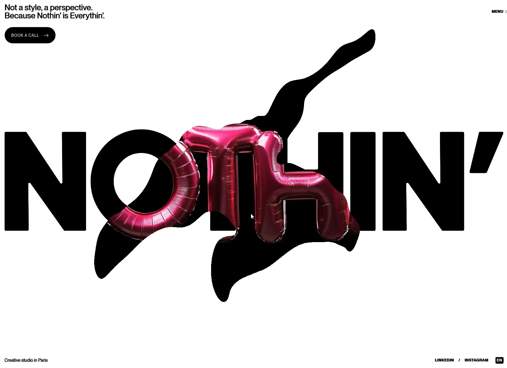

Nothin'
- Агентства и студии
- Дизайн-студия
- Брендинг
- Брутализм
- Монохром
- Редакционный
- Действующий сайт

Что это
Сайт парижской креативной студии с радикально чёрно-белым оформлением и единственным розово-малиновым акцентом. В первом экране SVG-надпись растворяется под симуляцией жидкости, открывая видео, а дальше работу ведут полноэкранные ролики и переходы между страницами. Впечатляющий сайт парижской креативной студии. Нетривиальный ховер-эффект, сочные анимации и крупные слайды.
Что смотреть в первую очередь
Смотреть как пример смелой инженерии поверх конструктора: Webflow отвечает за контент и разметку, а вся режиссура живёт в отдельном бандле — с GPU-симуляцией жидкости, FLIP-переходами и магнитным курсором.
Интересные факты
- Первый экран — не эффект поверх контента, а настоящая симуляция жидкости на видеокарте: мышь разъедает надпись и проявляет видео под ней.
- При наведении на карточку работ обычный курсор у ссылки отключается, а вместо него с инерцией догоняет мышь розовая пилюля «explore →».
- Переход между проектами — это перенос копий: заголовок и номер следующего проекта копируются, закрепляются поверх страницы и улетают на свои места на новой странице.
- Часть данных спрятана в текстовые описания картинок: ширина карточки в сетке и адрес видео вычисляются разбором этого атрибута.
- При сильной инженерии есть пробелы: на главной нет заголовка первого уровня, нет юридических страниц и баннера про cookie, а настройка «уменьшить движение» не учитывается — при трёх автоматически играющих видео и постоянной 3D-анимации.
- Контент и анимация живут отдельно: конструктор Webflow отвечает за страницы и разметку, а вся анимационная логика приезжает одним сжатым файлом с чужого домена.
Паспорт
- Домен
- noth.in
- Тип сайта
- Многостраничный
- Категории
- Агентства и студии
- Подкатегории
- Дизайн-студия, Брендинг
- Для кого
- Дизайнерам, Маркетологам, Агентствам
- Стиль
- Брутализм, Монохром, Редакционный
- Язык
- Английский
- Страна
- Франция, Париж
- Автор
- Nothin', основатель Sara Guedj
- Год
- 2026
- Добавлен в коллекцию
- 01.10.2026
Палитра
-
#FFFFFF— 74% кадра -
#000000— 18% кадра -
#401116— 4% кадра -
#751A2D— 1% кадра -
#AE264C— 1% кадра
- Режим
- Светлая
- Цвет фона
- Нейтральный
Технологии
- Webflow (конструктор, CMS и хостинг)
- Cloudflare перед Webflow
- Собственный JS-бандл на Netlify
- three.js r184
- Симуляция жидкости Navier–Stokes как маска
- GSAP 3.13.0 со ScrollTrigger
- Lenis
- Taxi.js (переходы между страницами)
- Bunny CDN для видео
- PP Neue Montreal и IBM Plex Mono
- JSON-LD Organization